The engineering
Everything the story stops lean on, in full: the model and its equations, the checks against measured throws, the seventeen decisions behind the two designs, the specifications, and the numbers at Jerusalem’s wall. Each section opens to its sources and to the model runs it quotes.
The model
The model, written in Python for this project, treats a trebuchet as rigid parts joined by pins and derives their equations of motion by Lagrange’s method. It covers six layouts: traction, a fixed or hinged counterweight on a fixed or wheeled frame, and the floating arm, whose weight drops straight down in guides while its axle rolls forward on a rail. Friction in each bearing follows the load on it, and the stone flies with an assumed drag coefficient of 0.40.
A throw is integrated in four stages. The stone slides along the trough while the arm begins to turn, held on the trough by a constraint until its upward push reaches zero. It then swings out in the sling, which must stay taut. Release comes when the sling’s ring slides off the prong, or at the ideal instant for range when the model stands in for a crew that has tuned its prong. Then the stone flies through the air to the target’s level, and the machine swings on without it for another 1.5 s so that its loads after release are recorded too.
The algebra was done by computer, so no equation was typed by hand, and the same generated code drives the Python model and the Proving Ground. For a hinged machine at rest in the trough the arm’s starting acceleration matches Horsdal’s closed form: 5.78 rad/s² against his 5.79 on his 19.1 t design. Without losses the model conserves energy to one part in ten billion.
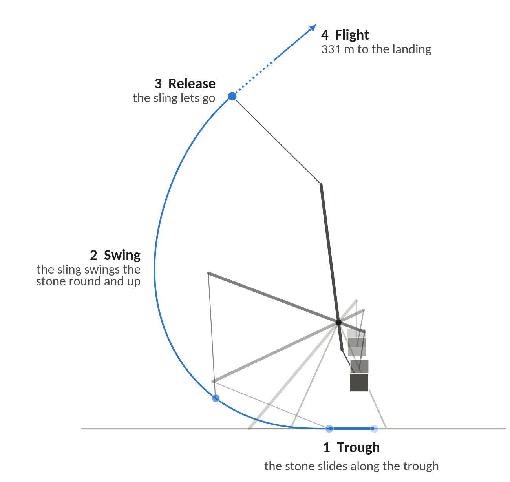
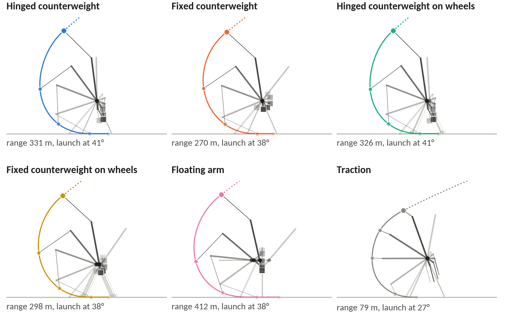
How the numbers were made, in order: the history and the sources (hundreds of works read and graded), the engineering foundations and the equations, the model and its validation, the design study with every option re-optimised, the comparison with real machines, the Jerusalem scenario, and the simulator. Every quantity the site quotes is either a fact in the register or a result of a model run with an identifier.
The equations
Every angle is measured from the downward vertical and is positive in the throwing sense, so 0° hangs straight down and 180° points straight up. A link at angle a points along d(a) = (−sin a, −cos a). The Jerusalem 1187 design is cocked at θ0 = 26°, its long arm pointing down and back.
With the axle at P = (x, H), the tip S, the short-arm end K, the counterweight C and the stone p lie at
For the hinged counterweight on a fixed frame the kinetic energy T and potential energy V are
With ℒ = T − V, each coordinate qj obeys d/dt (∂ℒ/∂q̇j) − ∂ℒ/∂qj = Qj, where Qj collects the losses and any crew force. Together the equations take the form M(q) q̈ + h(q, q̇) = Q, with M the mass matrix. What drives the throw is the moment (M L2 − mb LCM − m L1) g sin θ: the counterweight’s turning moment less those of the beam and the stone.
A fixed counterweight is the hinged one with L3 = 0 and ψ = θ. On wheels, the frame’s displacement x enters only through speeds, so the frame rolls to keep the centre of mass from moving sideways and the counterweight falls more nearly straight. In the floating arm the pin fixes the axle at P = (−L2 sin θ, H), so the counterweight drops straight down.
Release by prong: a ring at the free end of the sling sits on a prong at the tip, and slides off once the sling-to-arm angle δ = φ − θ reaches δr = β − 90° + arctan μp. A larger prong angle β releases later. Friction at each pin is a torque equal to the friction coefficient times the pin’s radius times the force on the pin. The pin forces depend on the accelerations, which depend on the friction, so each evaluation goes round that loop three times; more passes change the range by 4 × 10⁻⁶ m.
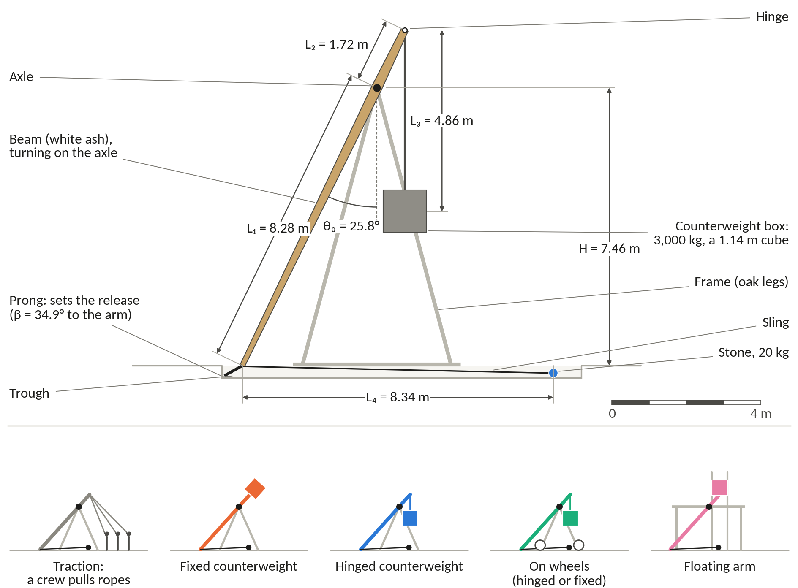
| Symbol | Meaning | Unit |
|---|---|---|
| L1, L2 | Long arm (axle to the sling’s attachment at the tip) and short arm (axle to the counterweight’s hinge) | m |
| L3, L4 | Hanger (hinge to the counterweight’s centre of mass, 0 for a fixed weight) and sling (tip to the stone’s centre) | m |
| H, yt | Axle height at the start, and the trough’s height above the ground | m |
| M, m, mb | Counterweight, stone and beam masses; M/m is the counterweight ratio | kg |
| Ib, Ic, LCM | The beam’s moment of inertia about the axle, the counterweight’s about its own centre, and the beam’s centre of mass from the axle | kg·m², m |
| θ, ψ, φ | Angles of the long arm, the hanger and the sling, from the downward vertical; δ = φ − θ | ° |
| β, μp | Prong angle between the arm’s axis and the prong, and the ring’s friction on it | °, none |
| μa, ra, μh, rh | Axle and hinge friction coefficients and pin radii | none, m |
| Crr, μg | Rolling resistance of wheels or rollers, and friction in the floating arm’s guides | none |
| d, ρs, Cd, ρa | Stone diameter and density, its drag coefficient on the area πd²/4, and the air’s density | m, kg/m³, none, kg/m³ |
| FR, FH, Ts | Axle reaction, hinge force and sling tension; quoted as multiples of the counterweight’s weight (Mg) or the stone’s (mg) | N |
| R, R*, η | Range from the point below the axle at the start; range divided by beam length; efficiency | m, none, none |
| vr, αr, hr | The stone’s speed, climb angle and height at release | m/s, °, m |
Energy and efficiency
Efficiency compares the stone’s energy at release with what the counterweight can give up:
ΔhCW is the drop of the counterweight’s centre of mass from the cocked position to the lowest point it could reach. Energy left in the machine at release counts as a loss, and the beam’s weight is not netted off, so a heavy long arm is penalised. For the 1187 design that gives 72 kJ ÷ 96 kJ = 0.75; for the Optimal, 129 kJ ÷ 142 kJ = 0.91.
Two other measures appear for comparison with the literature. Horsdal’s efficiency adds the stone’s height at release and nets off the beam’s weight, so his 91% design scores 0.76 on ours. Siano’s range efficiency, which Saimre also uses, compares the range with that of an ideal machine putting all the counterweight’s energy into a 45° throw in a vacuum: ηR = R ÷ 2(M/m) ΔhCW. Horsdal found an apparent consensus in the literature that the stone could receive at most about 70% of the energy the counterweight gave up, and his own optimised hinged designs put more than 90% into the stone in calculations without friction or air.
Where the rest goes: in a throw of the 1187 design the bearings take about 3 kJ and the air about 1 kJ on the way, and about 20 kJ stays in the swinging beam and counterweight after the stone has left. On the Aarhus laboratory engine friction and air take about 5%. For both designs the energy books balance to one part in a billion.
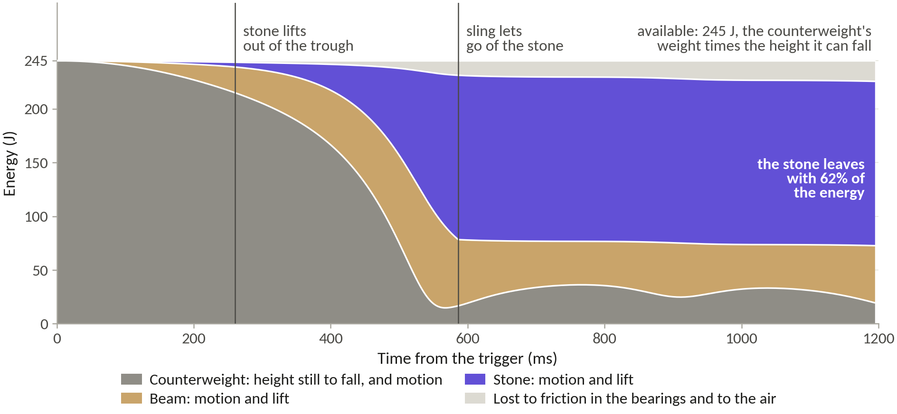
Air and drag
In flight the stone is a point mass with quadratic drag in still air: FD = −½ ρa Cd (πd²/4) |v| v, acting in the machine as well as in flight, with the pouch counted at the stone’s own area. The 1187 design’s stone would fly 741 m in a vacuum and flies 580 m in air, so air costs about 22%; the faster Optimal stone loses 32%, because drag grows with the square of the speed.
Cd is uncertain by a factor of two or more. Stones of 0.08 to 0.4 m at 20 to 66 m/s fly at Reynolds numbers of about 10⁵ to 2 × 10⁶, across the drag crisis, where a sphere’s drag falls sharply as the air at its surface turns turbulent. A smooth sphere’s drag coefficient is about 0.4 up to a Reynolds number of 2 × 10⁵ and about 0.09 by 4 × 10⁵, and roughness brings the crisis on earlier and holds the drag beyond it at up to about 0.4. The model uses 0.40 for rough stone. Horsdal assumed 0.25 in one paper, and he and his colleagues about 0.5 in another. Around the hinged optimum a coefficient of 0.10 gives 698 m and 0.50 gives 550 m, against 580 m at 0.40.
Air density is 1.14 kg/m³, the standard atmosphere at an assumed 750 to 800 m for Jerusalem. Ancient numbers are reports: Josephus’s talent at two stades would need 55 kJ at launch and land with 41 kJ if it were true, and the arithmetic says what the report would mean, not whether it happened.
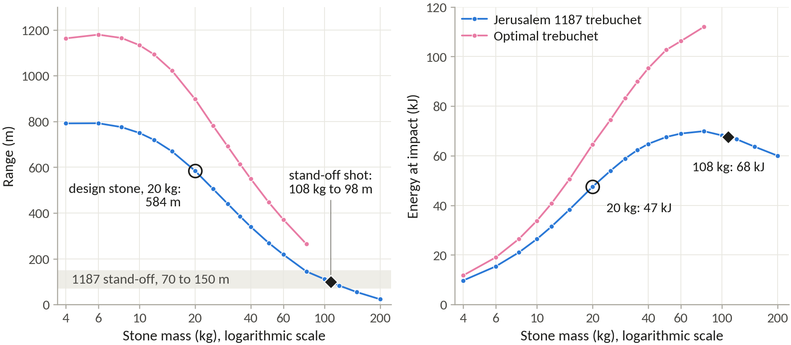
R* and scale
The scoreboard is range divided by beam length, R* = R ÷ (L1 + L2). Built to the same proportions, a trebuchet twice the size throws twice as far in a vacuum, because its equations of motion, written in proportions, do not depend on size. Horsdal’s scaled engines from 1.2 to 10 m all throw 33.7 times the length of their beam. Philo of Byzantium sized every part of a torsion catapult from one module so that its proportions held at all sizes, and R* rests on the same idea.
Shrink Horsdal’s 19.1 t design to a quarter of its size and it throws 112 m from a 1.8 m beam; double it and it throws 900 m from a 14.7 m beam; in a vacuum both score 61.3. With air a bigger stone keeps more of its speed, so R* in air rises slowly with size, from 52.4 at a quarter size to 56.4 at double. R*ideal, computed in a vacuum without friction and with the ideal release, ranks proportions; R*ref adds drag, friction, a prong release and a beam sized to its own loads at the reference scale, and decides every feature.
Horsdal divides range by the long arm alone. We use the whole beam because the short arm is part of the machine’s size and cost. Options are compared only at equal M/m, because R* rises with it: from 20.4 at M/m 25 to 113.9 at 400 for R*ideal. Strength does not scale: twice the size puts twice the stress in the same beam, so materials are judged at one reference size.
| Scale | Beam, m | Counterweight, kg | Stone, kg | Range in a vacuum, m | R* | R* in air |
|---|
Horsdal’s 19.1 t design at four sizes, with masses scaled by the cube of the length. Model run P5-R02.
How the model was checked
Code checks (S) reproduce another author’s calculation under that author’s assumptions, and so test the equations and their programming. Measured cases (M) test the physics. The project required at least two independent measured cases to agree within about 15%, which the Aarhus engine and Hansen’s machine do. The failures stay in the table.
| Case | Inputs | Model | Published or measured | Error | Run |
|---|---|---|---|---|---|
| V1 (S) Horsdal’s 19.1 t design: range, release, peak bending load at the axle | His geometry and masses; frictionless, vacuum | 449.1 m; 66.0 m/s at 39.8°; 1.60 Mg | 450 m; 66 m/s at 40°; about 1.6 Mg | −0.2%; 0.0%; +0.1% | P6-R01 |
| V2 (S) Horsdal’s friction and drag on the Aarhus engine: losses at pivot, hinge and sling; efficiency; vacuum range | Pivot and hinge μ 0.35, sling drag | 10.65, 1.85, 0.97 J; 75.5%; 40.1 m | 10.7, 1.8, 1.0 J; 75.5%; 40.4 m | −0.5 to +2.8%; 0.0%; −0.8% | P6-R02 |
| V3 (M) Aarhus engine in the field, 0.70 kg stone, 0.87 m sling | Friction as V2, Cd 0.40, tuned release | 38.8 m | 34.4 ± 1.5 m | +13% | P6-R03 |
| V3 (M) As above, 1.011 kg | As above | 29.1 m | 24.9 ± 1.5 m | +17% | P6-R03 |
| V3 (M) As above, 0.70 kg, 0.93 m sling | As above | 40.7 m | 37.5 ± 1.5 m | +9% | P6-R03 |
| V4 (M) Hansen’s machine, Nykøbing | 2,000 kg ballast, 15 kg ball; beam (450 kg central), box and bearings assumed | 180 m; 111 to 253 m over the unknowns | 168 m | +7% | P6-R04 |
| V5 (M) Saimre’s Otepää machine | 250 kg, 5 kg stone, from a 35 m hill; beam and most other inputs assumed | 48 m; 21 to 108 m | 120 m | −60% (fail) | P6-R05 |
| V7 (S) Siano’s ladder of range efficiencies | Frictionless; see-saw, then hinge, sling, trough, a beam of five stone masses | 11, 61, 80, 69, 67% | 11, 59, 81, 83, 67% | Within 2%, except the trough rung at −17% | P6-R07 |
| V11 (M) Tarver’s traction machine | Crew model fitted to 16 pullers and 4.7 kg; 40 kg beam assumed | 4 pullers: 28 m; 14 pullers: 70 m | 52 to 69 m; 145 m | −54%; −51% (fail) | P6-R11 |
| V12 (S) De Jong’s four models of Hansen’s machine | Frictionless, massless beam, vacuum | 278.1, 430.9, 321.6, 68.7 m | 278.1, 431.0, 321.6, 68.7 m | 0.0% | P6-R08 |
| V13 (S) Levert’s fixed and hinged machines, 300 kg beam | Frictionless, vacuum | 196.3, 193.2 m; see-saw 28.35 m | 196.1, 193.0 m; 28.3 m | +0.1 to +0.2% | P6-R09 |
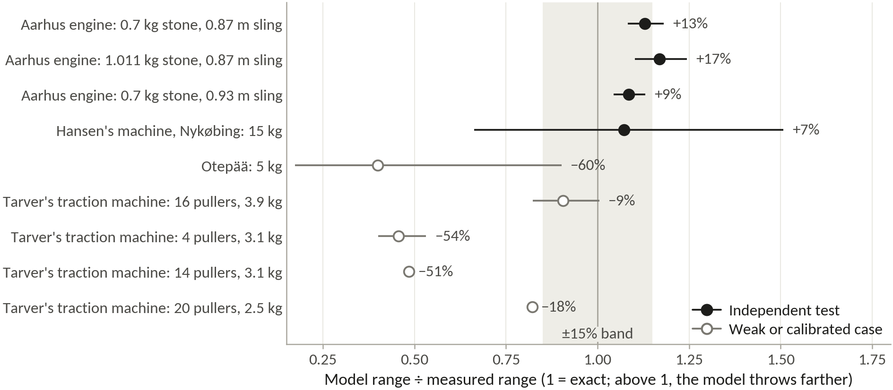
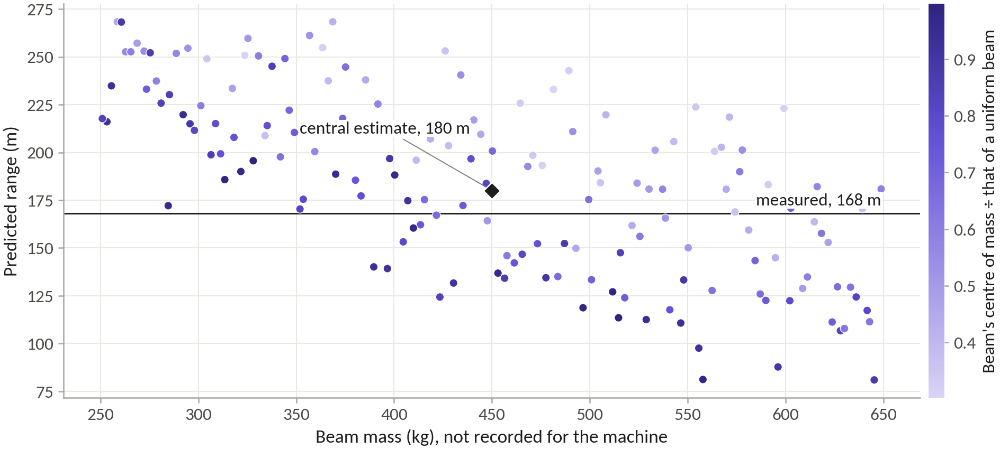
Horsdal measured 33 J of losses per throw on his laboratory engine, more than twice what friction and drag explain, and traced the rest to motions no rigid model includes, such as the trestle shifting and the beam bending. The model’s 9 to 17% overshoot on that engine’s field throws is about the size of the missing energy, so every absolute range on this site should be read as about 10 to 15% optimistic. Every design carries the same bias, so comparisons between them stand. No measured case exists for the floating arm or for a trebuchet on a rolling frame, so their margins over the hinged machine are model results. The traction crew model fails outside its calibration, so traction ranges here come from measurements. The Proving Ground’s JavaScript port matches the Python model to within 9 × 10⁻⁷ % in range on 45 and then 52 machines.
Reference scale and materials
Both designs are sized at one reference scale. The beam is 10 m long, inside the 8 to 12 m that Viollet-le-Duc gives for a trebuchet’s beam and the 10 to 12 m of Finó’s working calculation. The stone weighs 20 kg, a middle class among the catapult stones excavated at Arsuf. The counterweight is 3,000 kg, so M/m is 150, between Hansen’s 133 and the 191 of Horsdal’s reference design.
The designs are compared in two builds. The period build uses what a twelfth-century engineer could make: a tapered white ash beam, greased iron journals in hardwood (μ 0.2 on a 7.5 cm journal), a hemp sling worked at an eighth of its breaking load, a rubble-filled box and a hinge limited to 5 Mg for a timber box on iron straps. The modern build uses a carbon-fibre tube, rolling bearings (μ 0.0015), an HMPE sling at a fifth of its breaking load, a steel block and an 8 Mg pin. Both share a drag coefficient of 0.40, a stone density of 2,600 kg/m³, air at 1.14 kg/m³ and a trough with no friction.
Timber is worked at 0.375 of the clear-wood bending strength: 0.75 for the exclusion limit times 0.5 for hand-picked logs, with the usual allowance for impact loads held in reserve against fatigue over hundreds of shots. White ash breaks at 106 MPa in bending and is worked at 39.8 MPa. Steel and aluminium are worked at half their yield strength, wrought iron at a quarter of its ultimate strength, and the carbon-fibre laminate at 290 MPa. Per kilogram, ash and the straight softwoods make better beams than oak: at the 1187 geometry a white pine beam throws 594 m, Douglas fir 587, ash and elm 580 and white oak 566. Ash was kept for its toughness under repeated shock and its precedent in the documented reconstruction arms.
| Material | Density, kg/m³ | Test strength, MPa | Design strength, MPa |
|---|---|---|---|
| White ash, clear, 12% moisture | 672 | 106, bending | 39.8 |
| White oak | 762 | 105, bending | 39.4 |
| Douglas fir (coast) | 538 | 85, bending | 31.9 |
| Eastern white pine | 392 | 59, bending | 22.1 |
| Wrought iron, historic | 7,700 | 343, tensile | 86 |
| Steel S355 | 7,849 | 355, yield | 177.5 |
| Aluminium 6061-T6 | 2,700 | 276, yield | 138 |
| Carbon-fibre laminate | 1,580 | 2,207, tensile | 290 |
| HMPE rope, 24 mm | breaks at 388 kN | 1/5 of breaking load | |
| Leather, vegetable-tanned | 29.2, tensile | 5.8 |
Key materials and the design strengths used to size the two designs. Timber values are means for small clear specimens. Sources in the register.
The seventeen decisions
Every feature of the two designs rests on a written decision record. Each weighed precedent, from reconstructions, treatises and published models, against physics, from the model at the reference scale with the beam sized to its own loads. Without that step a notionally light beam flatters every option: the starting machine throws 498 m with a beam of 5% of the counterweight, but 391 m once its ash beam can carry the loads. The layout, the beam’s material and taper, and the counterweight ratio were settled by re-optimising every candidate from scratch; the hanger, sling and prong were then swept one at a time around the optimum.
| Decision | Precedent | Our physics (run) | Optimal | Jerusalem 1187 | Confidence |
|---|---|---|---|---|---|
| DR-01 Layout | A hinged weight threw farther than a fixed one | Period: hinged 579 m, fixed on wheels 586 m. Modern: floating arm 885 m, next best 747 m | Floating arm | Hinged counterweight | Medium |
| DR-02 Base | Hansen’s machine sat on a heavy fixed base | Wheels help a fixed weight (481 to 586 m) and hurt a hinged one (579 to 560 m) | Axle rolls on a short rail | Fixed frame | Medium |
| DR-03 Hanger | Short arm and hanger reaching the ground give 93.3% efficiency, two-thirds as long 92.2% | Longest hanger that clears the ground, which puts the hinge at its 5 Mg limit | Guided drop, no hanger | 4.86 m (2.8 L2) | High |
| DR-04 Arm ratio L1/L2 | Sanudo 5.5 to 6, Saimre 4 to 5 | Broad ridge from 4 to 6; optima 4.8 hinged, 3.1 floating arm | 3.1 | 4.8 | High |
| DR-05 Beam and axle height | One more metre of axle would add 17% to Hansen’s range | Taller always wins: axle 7.5 m, 580 m; axle 5.9 m, 432 m | 10 m beam, axle 7.34 m | 10 m beam, axle 7.46 m | High |
| DR-06 Beam mass and shape | A beam five times the stone’s mass cuts range efficiency from 83 to 67% | Ash sized to its loads: uniform 321 kg, 455 m; tapered 241 kg, 580 m | Tapered tube, 99 kg | Tapered beam, 241 kg | High |
| DR-07 Beam material | Al-Ṭarsūsī wanted cherry or a close-grained wood such as cedar | Ash 580 m, pine 594 m, oak 566 m; carbon fibre 885 m, steel 640 m | Carbon-fibre composite | White ash | Medium |
| DR-08 Bearings | Greased hornbeam axles at Nykøbing | Dry wood 553 m, greased iron 580 m, rolling bearings 594 m | Rolling bearings | Iron journals in greased hardwood | High |
| DR-09 Counterweight ratio M/m | About 100; Nykøbing gained about 30 m per 500 kg | Returns fall slowly: 1% more counterweight adds 0.56% of range at M/m 70, 0.37% at 400 | 150 (3,000 kg) | 150 (3,000 kg) | Medium |
| DR-10 Counterweight fill | Villard’s chest full of earth | Earth to lead changes range by 1% (579 to 582 m) | Steel block | Rubble box, 1.14 m cube, on a pin | High |
| DR-11 Sling length L4/L1 | About as long as the long arm | Optimum 1.0; at 0.8, 467 m | 1.1 | 1.0 | High |
| DR-12 Sling and pouch | Hansen’s rope-net pouch lasted about 120 shots | Peak sling pull 56 times the stone’s weight (1187), 77 times (Optimal) | 8 mm HMPE rope | 25 mm hemp, leather pouch | Medium |
| DR-13 Release | Each ring on Hansen’s hook cost about 5 m | Prong at 35°, 580 m; at 20°, 528 m; at 50°, 521 m | Steel prong at 32° | Iron prong at 35°, bent to tune | High |
| DR-14 Trough | A trough allowed a longer sling and more range | Without a trough, 530 m against 580 m | Lined trough | Greased plank trough | High |
| DR-15 Frame | Favé’s frame failed after four shots | Peak axle load 4.83 Mg (1187), 7.95 Mg (Optimal) | Steel portal on a slab | Two oak A-frames, staked | Medium |
| DR-16 Starting position | About 45° to the horizontal; 30° from the vertical | Set by the frame cap; propping the box 15° adds 2% | 15° from vertical, hanging free | 26° from vertical, not propped | High |
| DR-17 Projectile | Arsuf’s stones mostly 8 to 48 kg | 4 kg flies 791 m, 80 kg 144 m; impact energy flattens past 40 kg | 20 kg stone | 20 kg limestone, re-tuned for 8 to 35 kg | High |
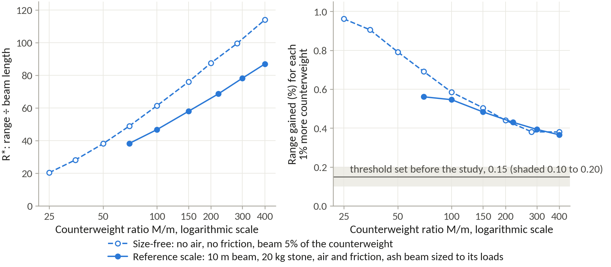
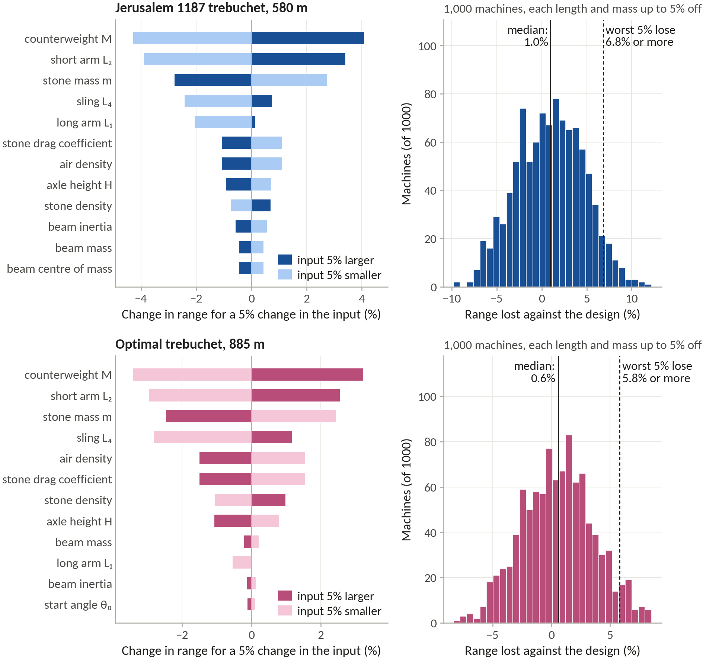
Where precedent and physics parted, physics won on the frame (the model keeps rewarding height, and so do Horsdal’s optimised designs, which start 30° from the vertical) and precedent won on the counterweight ratio, the timber and the base. Propping is the one period claim the model does not support: holding the hanger back 15° adds 2% and 45° costs 5%, so the 1187 design’s box hangs free. The frame cap of 0.75 beam lengths is a judgement about what a period crew could build, not a model result.
The two specifications
| Optimal trebuchet | Jerusalem 1187 trebuchet | |
|---|---|---|
| Layout | Floating arm: weight falls in guides, axle rolls on a rail | Hinged counterweight on a fixed frame |
| Arm ratio L1/L2 | 3.1 | 4.8 |
| Hanger ÷ short arm L3/L2 | none | 2.8 |
| Sling ÷ long arm L4/L1 | 1.1 | 1.0 |
| Start angle θ0 (from the vertical) | 15° | 26° |
| Long arm, short arm (m) | 7.55, 2.45 | 8.28, 1.72 |
| Hanger, sling (m) | none, 8.44 | 4.86, 8.34 |
| Axle height (m) | 7.34 | 7.46 |
| Counterweight, stone (kg) | 3,000, 20 | 3,000, 20 |
| Beam | Carbon-fibre tube, 28 cm diameter and 8 mm wall at the axle, tapering to 14 cm at the tip and 19 cm at the counterweight end, 99 kg | Solid white ash, 27 × 19 cm at the axle, tapering to 13 cm at the tip and 19 cm at the counterweight end, 241 kg |
| Counterweight box | Steel, 0.72 m cube | Stone rubble, 1.14 m cube |
| Frame | Steel legs | Oak legs, 17 cm square |
| Axle bearings | Rolling bearings, 14 cm steel axle | Greased hardwood, 15 cm wrought-iron journals |
| Sling | Two legs of 8 mm HMPE rope | Two legs of 25 mm hemp rope |
| Range (m) | 885 | 580 |
| R* | 88.5 | 58.0 |
| Efficiency η | 0.91 | 0.75 |
| Release speed and angle | 114 m/s at 38° | 85 m/s at 40° |
| Peak loads | Axle 7.95 Mg, pin 8.0 Mg, sling 77 × stone | Axle 4.83 Mg, hinge 5.0 Mg, sling 56 × stone |
The two designs at the reference scale. Ranges are model values, about 10 to 15% optimistic. Model run P7-R12. Throw the Optimal · throw the 1187 design.
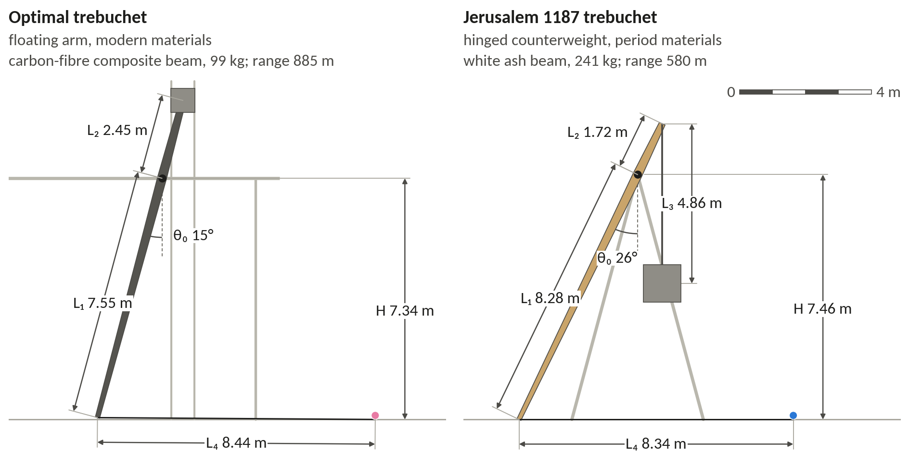
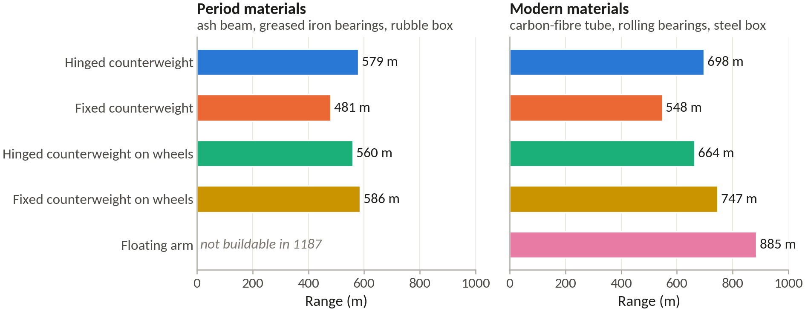
History against the optimum
Five machines have enough geometry to run. A beam whose mass was never published is taken as 0.20 of the counterweight including its box, thick at the axle, with its centre of mass at 0.65 and its moment of inertia at 0.70 of a uniform beam’s. Unknown hangers and slings copy the proportions of the Danish machine, a hanger 1.125 times the short arm and a sling 0.855 times the long arm. Each run assumes a practised crew’s best release.
| Machine and stone | Beam | Reported range, m | Model as built, m | Model, 5 to 95%, m | R*, own beam | R*, ash beam |
|---|---|---|---|---|---|---|
| Aarhus laboratory engine, 0.70 kg (M/m 77) | 4.86 kg, measured | 34.4 ± 1.5 | 38.8 (+13%) | measured inputs | 41.8 | 57.1 |
| Nykøbing, 15 kg (M/m 147, counting a 200 kg box) | 450 kg (0.20 M) | 168 | 180.1 (+7%) | 111 to 253 | 25.8 | 42.1 |
| Visby, 15 kg (M/m 177) | 542 kg (0.20 M) | about 170 | 162.8 (−4%) | 82 to 249 | 18.9 | 36.0 |
| Varbola, 10 kg (M/m 140) | 286 kg (0.20 M) | 120 | 178.3 (+49%) | 91 to 251 | 24.7 | 45.1 |
| Black Widow, 7.26 kg (M/m 84) | 181 kg, builder’s estimate | 270 | 182.2 (−33%) | 98 to 195 | 30.1 | 50.1 |
| Favé’s machine as printed, 11.7 kg | none over 254 kg can start | 175 | 157 at best, with a 184 kg beam | |||
| Jerusalem 1187 trebuchet, 20 kg (M/m 150) | 241 kg tapered ash | 580 | 58.0 | 58.0 |
The runnable machines as built and on equal terms. R* columns: scaled to a 10 m beam, a 20 kg stone and M/m 150, with the machine’s own beam rule or an ash beam sized to its loads. Model runs P8-R01 and P8-R02.
Aarhus (+13%), Nykøbing (+7%) and Visby (−4%) agree with the model as built, which overshoots laboratory throws by 10 to 15%. Varbola’s claimed 120 m, against 178 m with the rule’s 286 kg beam, would need a beam near 400 kg or a poorly tuned release. Black Widow’s single 270 m shot lies beyond all 80 sampled machines. As printed, Favé’s weights cannot swing a beam heavier than 254 kg, and a short arm of about 1.1 m would reproduce his 175 m.
Walked to the optimum one change at a time, Hansen’s machine gains 16.4 from an ash beam sized to its loads, 14.3 from raising the frame and only 1.5 from re-proportioning: the beam supplies 51% of the gap and the frame height 44%. Across all five machines the beam supplies 44 to 94% and the frame height 15 to 44%. The beam’s share is only as firm as the guess: at half the assumed weight its step shrinks from 16.4 to 4.5.
Held to Hansen’s frame height, an axle at 0.45 of the beam’s length, the best machine the optimiser finds has an arm ratio of 4.7, a hanger 1.0 times the short arm, a sling 0.76 times the long arm and a start 57° from the vertical. Hansen’s has 4.9, 1.1, 0.85 and 58°, and with the same ash beam it throws within 4% of that best machine. The low frame itself costs a quarter of the range. Hansen’s machine already had a hinged counterweight and a prong release; on its proportions a fixed weight would cost 14%, a prong set 10° early 5% and dry wooden bearings 3%.
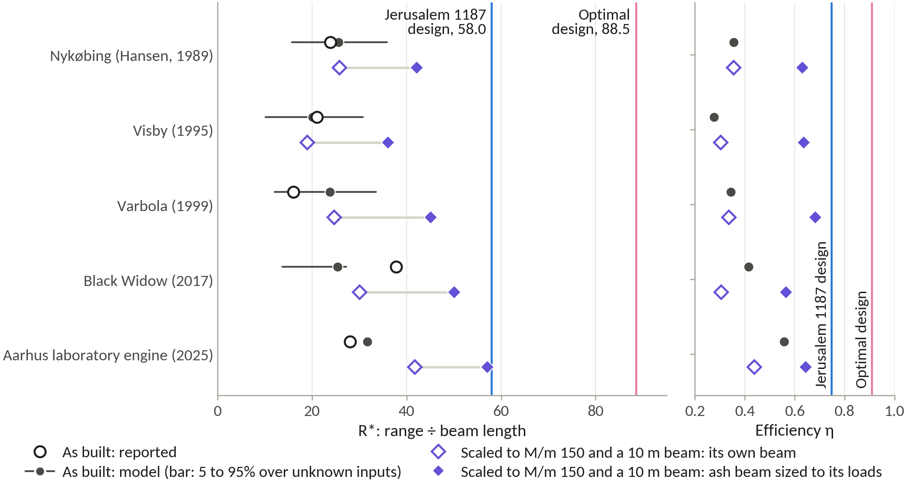
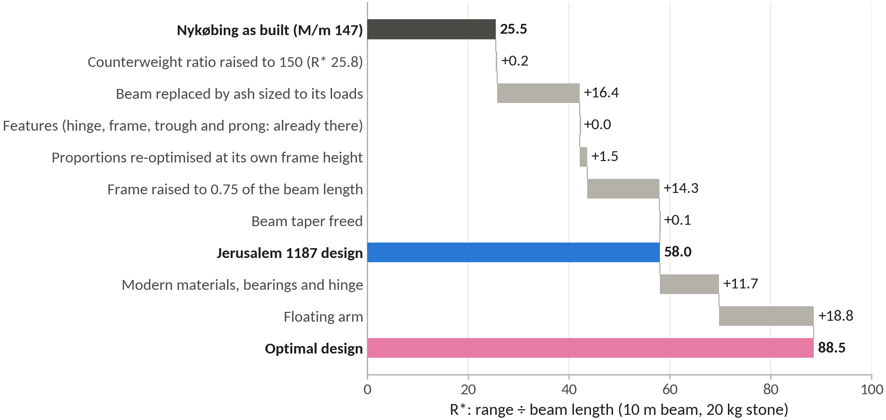
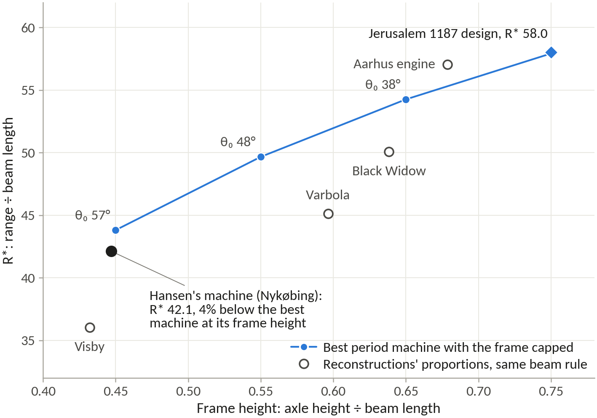
The dataset
The project’s dataset lists 33 engines, from machines in chronicles to a 2025 laboratory model. These are the nine with a counterweight, a stone and either a range or arm lengths. Engines known only by their shot or their weights stay out, as do figures resting on one popular source. The status column says whether the range was measured or reported, and the register’s confidence grade.
| Machine and date | Type | L1 / L2, m | H, m | M, kg | m, kg | Range, m | Status |
|---|---|---|---|---|---|---|---|
| Favé’s machine, Vincennes, 1850 | part fixed, part hung | 10.0 / 0.30 | 4,500 | 11.7 | 175 | reported, Medium | |
| Nykøbing Falster (Hansen), 1989 | hinged | 5.85 / 1.20 | 3.15 | 2,000 | 15 | 168 | measured, Medium |
| English reconstruction, by 1991 | not stated | 30,000 | 476 | 80 | reported, Low | ||
| Visby, 1995 | hinged | 6.95 / 1.15 | 3.5 | 2,650 | 15 | about 170 | builder’s figure, Low |
| Lihula, 1997 | not stated | 600 | 8 | 100 | reported, Medium | ||
| Varbola, 1999 | not stated | 6.35 / 1.15 | 1,400 | 10 | 120 | builders’ claim, Low | |
| Otepää (Saimre), 2002 | not stated | 3.1 | 250 | 5 | 120, from a hill | measured, High | |
| Black Widow (Bertrand), half scale, 2017 | hinged | 5.64 / 1.52 | 4.57 | 612 | 7.26 | 270 | builder’s figure, one shot, Low |
| Aarhus laboratory engine, 2025 | hinged | 0.975 / 0.25 | 0.831 | 53.9 | 0.70 | 34.4 ± 1.5 | measured, High |
Blank cells: not published. Visby’s best throw was 193 m with an 11 kg stone. The English machine is unnamed in its source, probably Hew Kennedy and Richard Barr’s, and its “30-ton” weight has no ton defined; its stone was a car. Traction engines appear on measured R* only: Tarver’s 4.88 m beam threw 3.1 kg 145 m with fourteen pullers (R* 29.7) and 4.7 kg 76 to 81 m with sixteen, and the NTNU machines threw 2 to 4 kg about 80 m from arms of up to 6.5 m. The full dataset is in the project files (02_research/historical_designs.csv).
Jerusalem’s wall
On the north the sappers had to cross a rock-hewn moat 14 to 20 m wide and more than 9 m deep, then pass a forewall 3.2 to 4.5 m thick standing 8 to 10 m in front of the main wall. The main wall is unmeasured, so the working values of 11 m high (9 to 15 m) and 2.5 m thick (2.0 to 3.2 m) lean on walls of its age such as Pisa’s, which have a weak core and average 11 m by 2.2 m. It is taken to be faced in meleke, the Old City’s main building stone, which is light (1,976 kg/m³) and weak, crushing at 11 to 16 MPa.
No source says how far back the engines stood. Saladin’s tent was within reach of the defenders’ weapons and his engines worked behind screens. Shooting a later steel siege crossbow, Ralph Payne-Gallwey reached 421 m (460 yards). Saladin’s engines were most probably traction machines, since the counterweight was only then appearing, and these threw 100 m or more. The stand-off, the distance from engine to wall, is taken as 70 to 150 m, a judgement rather than a measurement.
From out of range the 1187 design mostly misses: a stone coming down at 48° drops past the wall’s 11 m while travelling only about 10 m forward, and small differences in the stones and in the moment of release shift the landing point by 13 to 16 m, so only 27 to 30% of these shots strike the face; about 40% fly over into the city and the rest fall short. Moved in to the stand-off, with its sling and release re-tuned, it throws 108 kg to 98 m or 75 kg to 165 m, striking with 68 to 69 kJ, and 68% of the 108 kg stones hit the face. Released late, a 20 kg stone flies almost flat and hits 99.5% of the time with 71 kJ. The sling, not the beam, is the weak point: it pulls 28% harder at 108 kg and 64% harder in the flat shot.
The verdict leans on a model that runs 10 to 15% long, a borrowed wall, a judged stand-off and no tested link between impact energy and a breach. What holds it up is that the chroniclers’ sappers and the comparison with gunpowder agree: it was gunpowder that forced builders to thicken their walls, and a soft inner core like Pisa’s makes impact damage shallower but wider, so a clean hole is harder to open. Fortresses of the crusade era fell most often to mining.
| Stone, kg | Firing position | Range, m | Impact energy, kJ | Shots striking the face |
|---|---|---|---|---|
| 20 | Full power, out of range | 580 | 47 | 27% |
| 32 | Just beyond the steel crossbow | 421 | 60 | 29.5% |
| 108 | Stand-off, heaviest stone | 98 | 68 | 68% |
| 20 | Stand-off, late release (flat shot) | 100 | 71 | 99.5% |
What the 1187 design could have done at Jerusalem’s wall. Ranges are model values. Shares are from 200 simulated shots per setting aimed 8 m up the face, without wind. Model runs P7-R12, P8-R05 and P8-R06.
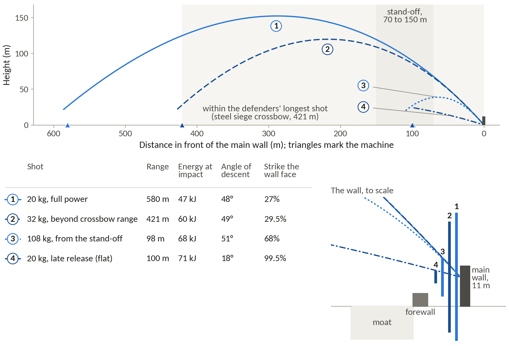
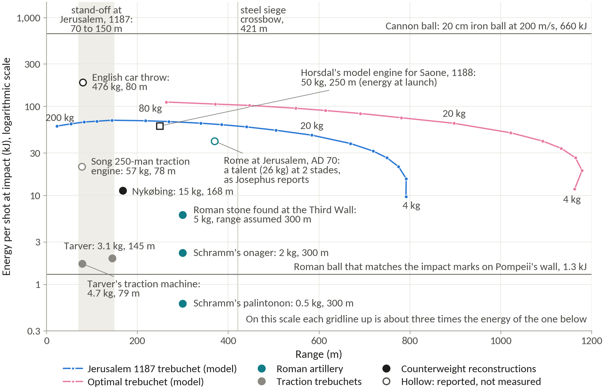
The scatter model
Each firing setting was thrown 200 times with the stone’s mass varied by 3% (one standard deviation), the drag coefficient by 0.04 and the prong by 0.5°, all drawn at random. The landings were aimed 8 m up the wall’s 11 m face, so that the nominal shot would strike it, and each landing was classed as short of the wall, on the face, or over it into the city. The long shots scatter by 13 to 16 m, and a stone coming down at about 48° passes the face in about 10 m of forward travel, which is why only 27 to 30% strike it. The heavy stone from the stand-off scatters by 4 m and strikes 68% of the time; the flat shot, coming in at 18°, strikes 99.5% of the time. No wind was modelled, and the aim is the crew’s, so a real battery would do no better than these shares and probably worse. At Hansen’s pace of a shot every ten minutes, a twelve-hour day puts 50 to 70 stones on the face.
The model runs
Every number from the model carries the identifier of the run that produced it. The records are JSON files in the project folder (05_results/data), each with the code version, the inputs and the outputs, made with the Python package in 04_model. The ones this site quotes:
The simulator
The Proving Ground runs a JavaScript port of the same equations, line by line. Checked against the Python model on 45 machines across all six layouts, and again on 52 after the designs, the historical machines and the Jerusalem settings were added, the largest range difference was 8.8 × 10⁻⁷ %, under a millionth of a per cent; release speed, efficiency, impact energy and peak loads agree to within 3 × 10⁻⁵ %. The two programs use different numerical solvers, so this tests the equations and the release logic, not one headline number.
Its simple mode changes six things on whatever machine is loaded: the counterweight, the stone, the arm ratio, the sling, the axle height and the release. The engineer mode opens every input in the model, in the symbols of the equations above, with six release modes and switches for the layout. The throw plays in three dimensions, drawn from the positions the physics gives, with a side view to scale beside it, and tabs plot the flight and energy, the loads, a sweep of one input, and a comparison of up to three machines.
What it leaves out: the beam, the frame and the sling are rigid, so its ranges share the model’s 10 to 15% optimism; the traction crew is fitted to one crew size; the stone’s drag is uncertain near the drag crisis; and it sizes no parts, so a machine that throws far on screen may not survive in timber. A sweep leaves the sling and prong untouched, so its curves show tendencies, not optima. It gives no numbers to quote: every number on this site comes from a model run with an identifier.
| Preset group | What it shows |
|---|---|
| The two designs | The Optimal and Jerusalem 1187 trebuchets of run P7-R12. The 1187 preset draws the north-east wall at a 100 m stand-off. |
| Jerusalem 1187 scenario | The 1187 design with sling and prong re-tuned for a 108 kg stone at the stand-off and a 32 kg stone from 421 m (run P8-R05). |
| Historical machines | Nykøbing, Visby, Varbola, Black Widow, Otepää and the Aarhus laboratory engine, each note stating the beam assumed (run P8-R01). |
| Historical and modern types | Demonstration machines, not optimised: traction, fixed and hinged counterweights, both on wheels, and the floating arm. |
| Published models | Horsdal’s 19.1 t design and Levert’s hinged and fixed machines, with the published ranges the model reproduces. |
The simulator’s preset groups. Built with Claude from the project’s model.